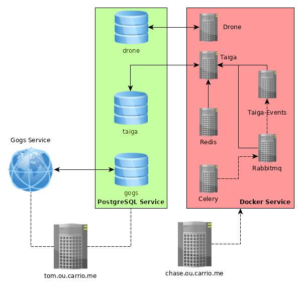

devops
DevOps Overview
Currently the project consists of two servers with a shared PostgreSQL service with separate databases for the Gogs and Taiga services.
PostgreSQL and Gogs are hosted on tom.ou.carrio.me while Taiga{-front,-back,-events} is hosted on chase.ou.carrio.me
A Visual Representation of the Stack

The tom.ou.carrio.me server is running both the PostgreSQL service as well as Gogs. The PostgreSQL service has 3 databases that have been initialized for all services in the stack, drone, taiga, and gogs.
The chase.ou.carrio.me server is running Docker containers for the Taiga stack and Drone. The Taiga stack includes Taiga-front-dist, Taiga-back, Taiga-events, Redis, Rabbitmq, and Celery.
These services can be visited at the links as mentioned at the top!
All relevant scripts and files are available under the /assets/code directory, and are simply the tom_backup and chase_backup directories merged for ease of access.